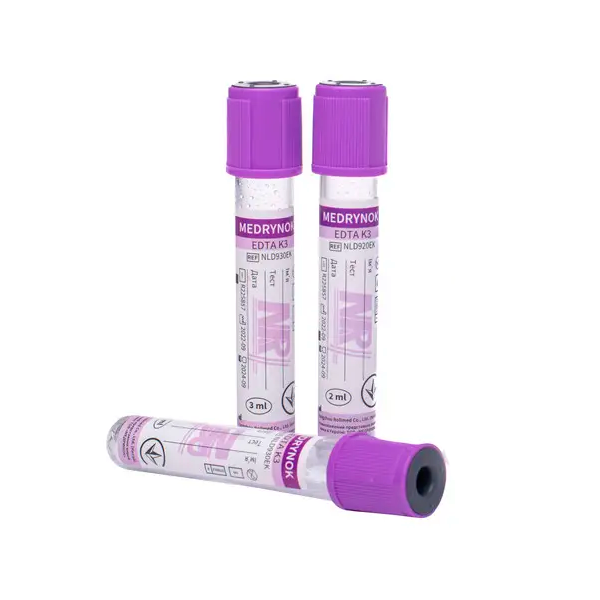
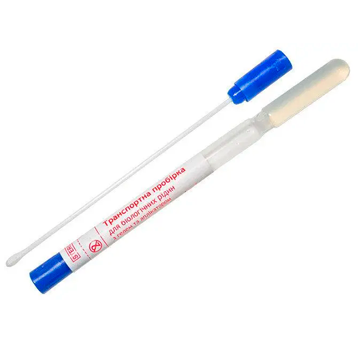
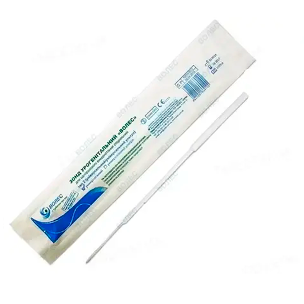

Вибір витратних матеріалів є важливим моментом при підготовці до відбору проб для дослідження. Використовуйте тільки одноразові, стерильні пробірки, контейнери, зонди, рекомендовані лабораторією, так як вони найбільш підходять для збору, зберігання і транспортування біологічного матеріалу.
Так що стандартом при виборі антикоагулянтів для лабораторних досліджень є ЕДТА, що запобігає згортання крові в зразку. Використання транспортного ПЛР-середовища дозволяє надійно зберегти відібрані вами змиви і подряпини. Якщо вам потрібно отримати цілу (стабілізовану кров) – використовуйте пробірки з ЕДТА, а при необхідності сироватки – пробірки зі згортанням активаторів (відповідне маркування знаходиться на пробірці)
Використовуйте урогенітальний зонд для збору матеріалу з різних слизових оболонок.
Будьте обережні при виборі витратних матеріалів, так як неправильно відібрані і збережені зразки не приймаються до досліджень.
Будь-ласка, відправляйте аналізи лише витратними матеріалами які наведені нижче. Баночки та шприци не відправляйте.
| Матеріал для дослідження | Фото витратних матеріалів |
|---|---|
|
• Кров з ЕДТА
|

Пробирка с антикоагулянтом |
|
• Змиви з кон'юнктиви та носа
|

Еппендорф |
|
• змив • зішкріб • рановий матеріал • ексудат |

Аплікатор з транспортної пробіркою |
|
• Змиви з кон'юнктиви та носа • зішкріб зі слизової урогенітального тракту / піхви / прямої кишки |

Зонд урогенітальний |